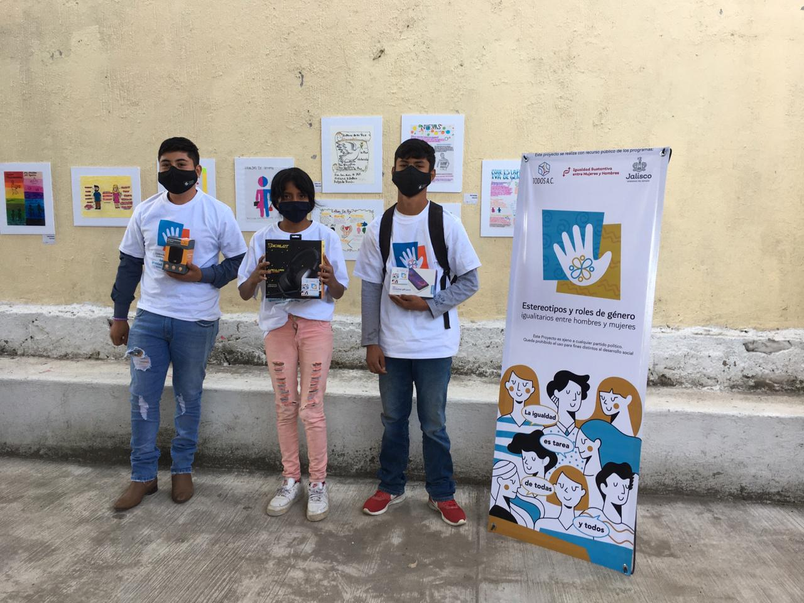

Trabajo Objetivo Detonante de Oportunidades para Servir, T.O.D.O.S. es una Asociación Civil con registro federal y estatal, la cual fue creada en el 2015 sin fines de lucro con el objetivo de apoyar a los sectores Jaliscienses vulnerables con programas para mejorar la calidad de vida e igualdad de oportunidades a través de un enfoque integral que fomenta la participación y fortalezca el tejido social.
Nuestra misión es apoyar a comunidades Jaliscienses en situación de riesgo o vulnerables a través de un enfoque de desarrollo comunitario con servicios integrales que fomenten la participación y fortalezcan el tejido social.
Nuestra visión es ser una asociación civil conocida por lograr en sus intervenciones fortalecer el tejido social así como por promover la activación de las comunidades e igualdad de oportunidades
Actualmente trabajamos en la parte oriente de la Zona Metropolitana de Guadalajara, comunidades pertenecientes al municipio de Tonalá con comités fijos y grupos de voluntarios que son habitantes de las mismas colonias: Santa Isabel, La Puerta, La Ladrillera, La Severiana, Fraccionamiento El Duque, Colonia Jalisco, Zalatitán y 20 de Noviembre, con la encomienda de tener mayor alcance en un mediano y largo plazo.
Programa "Estereotipo y roles de género igualitarios entre hombres y mujeres" implementado con apoyo de la Secretaría de Igualdad Sustantiva entre hombres y mujeres año 2020 en la Sec 107 "José Marti" en Sta Paula Tonalá
Entrega de despensas "Jalisco sin Hambre" de Gobierno del Estado en apoyo a la población que atendemos en las colonias La Pilita, Sta Isabel, La Ladrillera y La Severiana Junio 2020
Proyecto estereotipos y roles de género igualitarios entre hombres y mujeres con apoyo de la Secretaría de igualdad sustantiva del Gobierno del Estado en el año 2020